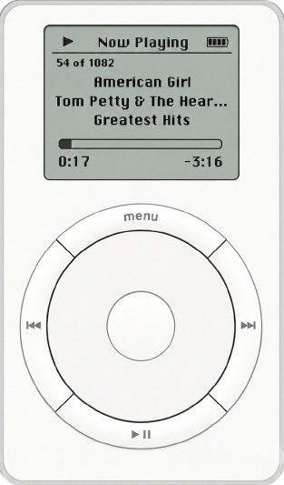
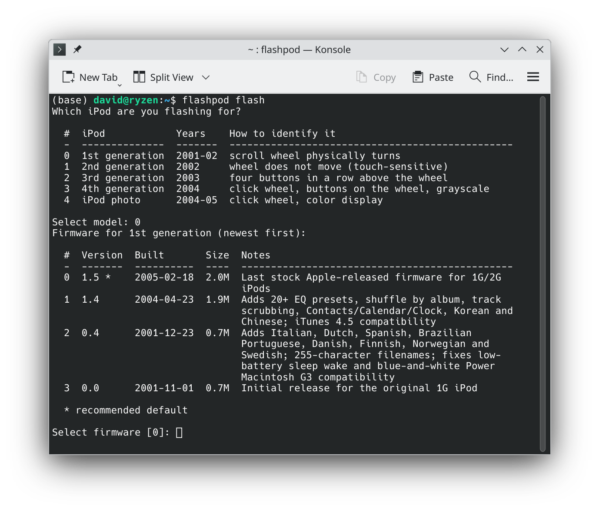
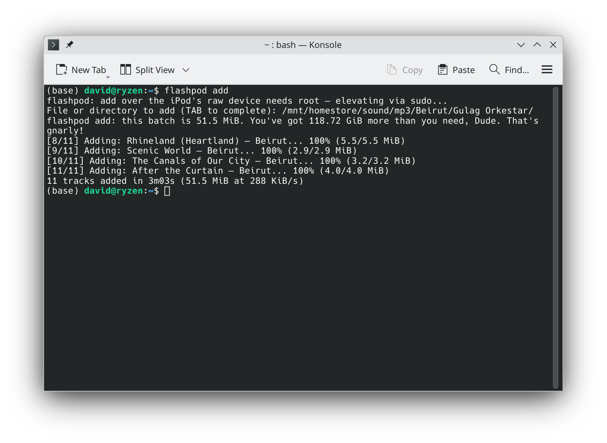
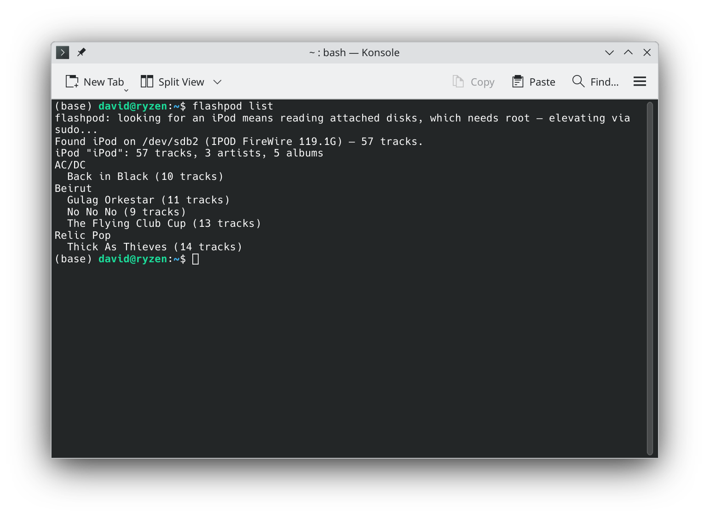

Flash the card
Writes the iPod firmware and partition layout to a CF/SD card, verifies it byte-for-byte, and refuses to touch the disk running your system.
Vintage iPod, modern desktop
flashpod is a command-line tool that puts a flash storage card into an early-generation iPod and manages the music on it, writing the firmware, building the database, and loading songs. No iTunes, ever.

Writes the iPod firmware and partition layout to a CF/SD card, verifies it byte-for-byte, and refuses to touch the disk running your system.
Creates the iPod_Control structure and an empty music
database from scratch, no iTunes, no libgpod plugin required.
Adds files or whole folders, reads tags automatically, skips duplicates, and front-loads your library fast over a USB reader.
Lists, adds, and removes tracks right on the iPod over USB or FireWire, it finds the device for you, no mounting or device paths.
Reads and writes directly over the raw device with its own FAT driver, so it can manage iPods the OS can’t even mount.
Download a single executable for your OS, no Python, no dependencies to install. Built to run on hardware as old as OS X 10.8.
Flash the card in a USB reader, let flashpod initialize the database and load the bulk of your music, then pop it into the iPod. From there, flashpod finds the device on its own, add or remove the odd track in seconds.
$ flashpod ls flashpod: looking for an iPod means reading attached disks, which needs root — elevating via sudo... Found iPod on /dev/rdisk1 — 82 tracks. iPod "David's iPod": 38 tracks, 2 artists, 2 albums New Order Power, Corruption & Lies (8 tracks) Substance (12 tracks) The Cure Kiss Me, Kiss Me, Kiss Me (18 tracks) $ flashpod add ~/music/New\ Order\ -\ Blue\ Monday.mp3 Found iPod on /dev/rdisk1 — 82 tracks. [1/1] Adding: Blue Monday — New Order... 100% (6.8/6.8 MiB) 1 track added in 26s (6.8 MiB at 268 KiB/s)



flashpod is a command-line tool to help manage early-generation iPods, 1st through 4th gen, before video capability was added, that have had their original hard drive replaced with more reliable modern flash storage. (4th gen should work, but isn’t hardware-tested yet.)
It’s especially useful if you have a FireWire iPod and want to sync music over FireWire after performing a flash modification. FireWire sync for flash-modded iPods reportedly never worked, for reasons that stayed unclear for years until they were recently documented, flashpod makes that transfer work reliably, as explained more technically below. It can also fully image a flash card for each generation of iPod.
A USB card reader in order to first image the flash card in preparation for putting it in the iPod. You flash the card in the reader on any modern computer, load the bulk of your music onto it there at full speed, and put it in the iPod. After that, you use FireWire to add and remove songs from the iPod.
These models have only a FireWire port, so that second part means finding FireWire:
Expect about 270 KiB/s over the cable. That’s a hardware ceiling nobody can code around, for reasons worth reading about, so adding a few tracks over FireWire is quick enough, but when you’re moving a lot of music it’s faster to pull the card and go back to the reader.
Managing the iPod over FireWire works on Linux and macOS. It can’t work on Windows, which dropped FireWire support after 8.1, on Windows, use the card reader.
On a Mac, plugging the iPod in throws a “disk not readable” dialog. That’s expected, but one of its buttons will reformat your card, see why your Mac says that before you click anything.
Developed on a Linux desktop with a PCIe FireWire card, tested on a Thunderbolt MacBook Pro running OS X 10.8 and on a 2015-era MacBook Pro running Monterey.
3rd generation iPods use USB for the data transfer, but charging only happens over FireWire. You need a USB card reader to first image the flash card for the iPod, and you need a 30-pin to USB cable to perform the sync.
Apple (and other manufacturers) also made special 30-pin cables that had both a FireWire and a USB end. If you have one of these, plug the USB end into your computer and the FireWire end into a FireWire AC power adapter: that charges your iPod back up and lets you add and remove music once the flash card is in the iPod. If you only have a 30-pin to USB cable, you’ll need a separate 30-pin to FireWire cable to charge it.
Beyond that it’s straightforward. Flash the card in the reader, put it in the iPod, and connect it over USB. It mounts like any ordinary disk and flashpod manages it directly, at megabytes per second rather than the kilobytes per second the FireWire models are stuck with. You can leave the card in the iPod and plug the cable in whenever you want to change the music, which is the way it was always meant to work.
One thing to watch: because the volume really is mounted, eject it
before you unplug, flashpod offers to do that for you at the
end of an add or rm, and waits until it has
actually happened.
Music sync over USB was hardware-tested on a 3rd generation iPod on macOS Monterey and a Linux desktop.
The same kit and the same steps as the 3rd generation: a USB card reader to image the flash card, then a 30-pin to USB cable to sync. The dock connector and the USB data path are the same, so the card mounts as an ordinary disk and flashpod manages it directly at full speed.
One thing is simpler here than on a 3rd generation: the 4th generation charges over USB. A single 30-pin to USB cable does both power and data, so there’s no hunting for a dual-ended cable or a FireWire power adapter.
flashpod carries firmware for both the grayscale 4th generation and the colour iPod photo, and asks which one you have before it writes anything, the two are not interchangeable.
Not yet confirmed on hardware. Nothing about these models suggests they behave differently from a 3rd generation, and flashpod will flash and manage them, but nobody has run the whole path on one and reported back. If you try it, I’d like to hear how it went.
Short answer: go cheap. A decent-brand SD or microSD card and an inexpensive SD-to-CF adapter off eBay. There is no point buying anything larger than 128 GB, these iPods can’t address past that no matter what you put in them.
The more nuanced answer: CompactFlash cards have the best compatibility record, with SD and microSD slightly behind them. But gigabyte for gigabyte, SD is simply cheaper than CF. The odds of a SanDisk SD card behind an SD-to-CF adapter working out are very favourable, and that combination is the same flash hardware flashpod was developed and tested on.
On a 1st or 2nd generation iPod, around 5,000, however big your card is.
People who fit a 64 GB or 128 GB card and set about filling it up
discover that these iPods have a second limit, and it bites long
before the storage does. The iPod keeps a database of every track and
its metadata, iPod_Control/iTunes/iTunesDB, and the firmware can
only load a database up to a certain size. Past that, the iPod boots
normally and shows an empty library. No error, no warning,
just no music.
The cliff was measured on real 1st generation hardware, and it is sharp: a database of 3,776,000 bytes loads and plays; 3,776,684 bytes shows nothing. What matters is the bytes, not the track count, so how many songs that works out to depends on your tags, roughly 5,000 to 5,500 with typical artist and title lengths. Long names and rich metadata cost you capacity.
flashpod knows about the ceiling. flashpod add projects
how large the database will be before it copies anything and
offers to trim the batch to what will fit, so you find out at the
prompt rather than from a silently empty iPod. Setting
FLASHPOD_DB_LIMIT raises or lowers that ceiling, and
0 disables the check, useful on later models,
which may well load more.
Not at all. In the past, iTunes did the first crucial imaging steps on the card: partitioning it, each card carries a small firmware partition and a much larger data/music partition, and writing the correct firmware file to that firmware partition.
flashpod handles all of it. You never partition the card yourself; it lays out the partitions correctly for the iPod, then asks whether you want to write the firmware, offers a list of firmware files, and downloads the one you pick on your behalf.
No. The release binaries have Python baked inside them, download the archive for your OS and you get a single executable with nothing to install.
That said, if you already have Python 3.6 or newer,
pip install flashpod is the shortest path, and it pulls in
the one dependency (mutagen, which reads the tags off your music files)
for you. Most Linux systems and any Mac with the Xcode command-line
tools already qualify; Windows usually doesn’t unless
you’ve installed Python yourself. If you’d rather keep it
isolated from your other packages,
pipx install flashpod works the same way.
One exception worth knowing: on a genuinely vintage Mac, pip isn’t an option at all. Those machines’ TLS certificates are too old to complete a handshake with PyPI, which is why there’s a separate build for them that needs no network at all, see Install.
flashpod flash erases the card, yes, that’s
the job. It repartitions it and writes the firmware, so anything
already on the card is gone. The other commands don’t:
ls, add, and rm work within the
filesystem that’s already there.
As for the wrong disk, the honest answer is that a tool which writes raw sectors has to earn your trust, so here is exactly what stands between the command and a mistake:
/dev/sdb1.
If you’d rather look before you leap, --dry-run
prints the whole plan and writes nothing.
Because talking to a raw device requires root, and flashpod’s whole approach depends on raw access. It isn’t only the writing, either: finding an unmounted iPod means reading the attached disks to see which one carries an iTunes database, and that’s a privileged operation before any music is involved.
If your iPod is already mounted, which is the normal case on a 3rd or 4th generation over USB, flashpod works through the mount and never asks for anything. The password prompt belongs to the raw path.
You never type sudo yourself, though. flashpod re-runs
itself under sudo the moment it needs the device and tells you it’s
doing so:
$ flashpod add ~/Music/album flashpod: add over the iPod's raw device needs root — elevating via sudo... Password: Found iPod on /dev/rdisk2 — 31 tracks.
Any FLASHPOD_* environment variables you set are carried
across that boundary, which sudo would otherwise discard. On Linux,
root is also what lets it pin the FireWire device’s queue
settings before a session, a safeguard explained in
the technical answer. On Windows, run the
flash command from an Administrator terminal.
For flashing and filling the card in a USB reader, yes, unzip
the Windows build and run flashpod.exe from a terminal,
using an Administrator terminal for flash itself.
Syncing over FireWire on Windows is not supported, and won’t be: Windows dropped FireWire support after Windows 8.1. The legacy 1394 drivers were removed from the operating system, and the storage layer that lets an iPod appear as a disk went with them. This isn’t a gap in flashpod, there’s nothing underneath it left to build on. A PCIe FireWire card doesn’t rescue it either, because what’s missing is the driver stack, not the controller.
Managing a 3rd or 4th generation iPod over USB is a separate question: there’s a Windows backend for that, but it hasn’t been hardware-tested yet.
So on Windows, use the workflow that was always the fastest one anyway: pull the card, load it in the reader, put it back.
Because it isn’t, not by macOS, anyway. Nothing is wrong with your card, and this is expected on a flash-modded FireWire iPod. Only the 1st and 2nd generation are affected; a 3rd or 4th generation over USB mounts perfectly normally.
Plugging in the iPod prompts macOS to try to mount the data partition, and it can’t. You get “The disk you inserted was not readable by this computer” and three buttons: Initialize…, Ignore, and Eject.
Pick Ignore. Whatever you do, don’t pick Initialize…, that opens Disk Utility to reformat the card you just carefully prepared. After you hit Ignore, flashpod carries on working perfectly.
The cause is the operating system’s own FAT driver being unable to communicate successfully with the iPod’s flash storage. flashpod is designed to bypass that driver entirely and talk to the iPod carefully over the raw device the Mac exposes, rather than through a mounted partition, which is exactly why flashpod can read and write a card that the Finder cannot even open. The technical answer covers what the OS driver is doing wrong.
You heard right. Apple revised the 1st and 2nd generation firmware many times over the years, and most of those releases are simply gone. flashpod has images for four of them, and offers all four:
That last one, also written as version 1.0, is the recently rediscovered original, extracted from an old Apple firmware utility. It shipped on the iPods that went on sale in November 2001 and Apple replaced it about seven weeks later.
Mind the split: touch-wheel support didn’t arrive until partway through the line, so 0.0 and 0.4 are 1st gen only and would leave a 2nd gen unusable. flashpod asks which model you have and then offers only firmware that fits it. If you’re unsure which you own, turn the wheel, the 1st gen’s scroll wheel physically rotates, and the 2nd gen’s doesn’t move at all.
All four have been synced over FireWire on a 1st generation iPod, on stock Apple firmware, with no patching. A 2nd generation hasn’t been tested yet, it uses the same FireWire hardware, so 1.4 and 1.5 ought to behave the same there, but I haven’t confirmed it.
flashpod doesn’t bundle these images, they’re Apple’s copyright. It downloads the one you pick and verifies it against a known SHA-256 before writing anything.
Short version: the iPod was willing all along. What broke every previous attempt wasn’t the iPod or the card, it was your computer talking too fast.
Every tool before flashpod synced the same way: plug in the FireWire cable, the iPod reboots into disk mode, your operating system sees a storage device and mounts the FAT32 partition holding the music. Then iTunes, or Winamp, foobar2000, EphPod, Rhythmbox, gtkpod, Amarok, YamiPod, copies files onto that mounted volume. The mount usually worked. The sync didn’t, because those programs never touch the iPod directly: they ask the OS for files, and the OS’s own FAT32 driver turns that into traffic on the FireWire bus. A modern OS drives storage in big, queued, read-ahead gulps, which is a perfectly sensible thing to do to an SSD and far more than a flash-modded iPod can survive. It falls over.
flashpod’s discovery was that the iPod syncs happily if you stop doing that. It opens the device in raw mode, going around the operating system’s FAT32 driver entirely and doing every filesystem access itself, unbuffered, capped at a few kilobytes at a time. No monster bites, just sipping. Hold to that pace and the transfer simply works.
None of this ever affected the iPod’s own use of the card. Give a 1st or 2nd generation iPod a properly prepared card and it boots and plays music off flash quite happily on stock Apple firmware. Only host-driven syncing was broken, and only because of how the host drove it.
Sipping is reliable, but it isn’t fast, expect around 270 KiB/s over the cable. For a bulk load, flash the card and fill it in a USB reader instead, which doesn’t involve the iPod’s FireWire hardware at all, then use the cable for the odd track. The next answer explains why full speed over FireWire is off the table without new hardware.
Happily. There are two separate problems tangled together here, and keeping them apart is most of the insight: why fast transfers are impossible, and why even slow ones failed for twenty years.
1st, 2nd, and 3rd generation iPods bridge FireWire to the ATA bus with
a Texas Instruments TSB43AA82, codename
“iSphynxII.” TI’s own Storage Reference Design for
the part, published in 2001, admits the defect outright:
iSphynxII does not implement the 16-bit CRC value required at the
end of ATA UltraDMA transfers.
The 1.8″ Toshiba drives Apple shipped tolerated the missing checksum. CompactFlash and SD cards in True-IDE mode enforce the spec, so UltraDMA is simply unavailable with a flash card and every transfer falls back to PIO, the slow, CPU-driven mode where the processor moves each halfword itself instead of letting a DMA engine stream it. That fallback is roughly 50× off full FireWire speed, and it is the origin of flashpod’s ~270 KiB/s ceiling. No software can supply a checksum that was never put on the wire.
Locating that paragraph in a 25-year-old datasheet is
u/dantidote’s
work, not mine, and their Sphinxmoth adapter is the only
fix that addresses the defect itself: a small board between the iPod
and the card that supplies the CRC the chip never sent, restoring
full-speed stock syncing with the iPod sealed shut. It works on the 3rd
generation too, which uses the same TSB43AA82.
PIO being slow doesn’t explain why syncing broke rather than merely crawled. That part is the host’s fault, and it went unnoticed because every tool made the same architectural choice, the one described in the answer above: they all worked through an OS-mounted FAT32 volume, at the file level, leaving the actual conversation with the device to the operating system.
So the thing pacing that conversation with a 2001 iPod is a filesystem driver written for modern hardware, and nobody ever asked it to be gentle. It reads ahead speculatively, coalesces writes into large batches, and keeps several requests in flight. An iPod in PIO mode cannot keep up, and the failure isn’t graceful: transfers come back as zeros, the device can drop to reporting zero capacity mid-write, and the filesystem gets corrupted on the way down.
The measured limits on real hardware are stark. Single-sector transfers, 512 bytes, work in both directions. Through macOS’s raw device, where nothing stands between the request and the bridge, 4 KiB already fails: reads come back as zeros and writes corrupt. For comparison, the default Linux settings ask that device for 128 KiB at a time, with another 128 KiB of read-ahead on top.
Normally when a program reads or writes a file, the bytes don’t go straight to the device. They pass through the kernel’s page cache: a read of 512 bytes may quietly become a 128 KiB read because the kernel assumes you’ll want the next part soon, and a write may sit in memory to be merged with its neighbours and flushed later, in whatever size and order the kernel prefers. That buffering is invisible, and it is exactly what you want on modern storage.
Unbuffered means opting out: your bytes go to the
device in the size you asked for, at the moment you ask. On macOS that
means the raw character device /dev/rdiskN rather than
/dev/diskN; on Linux it means opening the block device
with O_DIRECT. Without it, capping your own transfers
accomplishes nothing, the page cache re-batches your careful
512-byte requests straight back into the large ones that break the
bridge. flashpod shipped that regression exactly once, in v0.3.0, and
it preceded a crash mid-add.
The proof is a single sector. A freshly flashed card read through
macOS’s buffered device comes back as zeros, and Disk Utility
refuses to mount the volume, complaining of an invalid boot block. The
very same sector read raw comes back byte-perfect, eb 58 90 "MSWIN4.1", exactly as written. The card was
never wrong. The buffer cache was.
Bypassing the OS’s FAT32 driver means implementing FAT32 yourself, so that’s what flashpod does: directories, long filenames, cluster allocation, deletes and overwrites, in its own driver, every access unbuffered and capped to a size the transport can survive, as little as a single sector over FireWire.
On Linux there’s a second line of defence, and it’s worth
explaining because it’s what makes 4 KiB safe there when the same
4 KiB corrupts on a Mac. The kernel keeps a set of per-device knobs
called the request queue, which bound the I/O it will build for that
disk: max_sectors_kb is the largest single request it will
issue, read_ahead_kb is how far past your request it will
speculatively read, and queue_depth is how many requests it
will keep in flight at once. The defaults are generous because generous
is what makes modern storage fast.
flashpod pins those to 4, 0 and 1 before every session. Not for its own transfers, those are already capped and unbuffered, but for everything else on the machine that might touch the device: an OS mount, a desktop’s automounter, or the probe the system fires automatically whenever a writable handle on a block device closes. Any one of those can issue a read large enough to collapse the bridge, and one of them once wrecked a card immediately after a clean write. With the queue pinned, the kernel physically cannot build a request bigger than 4 KiB, no matter which program asks. macOS exposes no per-disk equivalent, there is no knob to pin, so flashpod has to be its own throttle there, and holds to a single sector over the bridge.
Writing your own filesystem driver is a good way to lose data, so this one is cross-checked three independent ways: flashpod re-reads its own writes, mtools reads what flashpod wrote and vice versa, and the Linux kernel mounts a filesystem flashpod built by hand.
Preparation matters as much as pacing. FAT32 requires at least 65,525 clusters, below that the volume is FAT16 by definition, the iPod firmware reads it as FAT16, and it crashes exactly as if there were no filesystem at all. Formatting tools only warn about this. flashpod sizes clusters adaptively to stay above the floor.
The firmware addresses sectors with 28-bit LBA, and no LBA48 opcode appears anywhere in the image, so 228 × 512 bytes = 128 GiB is a hard wall no matter how large the card is. It’s easy to demonstrate: read sector 0, then read sector 268,435,456, and you get identical bytes, because the address wrapped around. No board, patch, or driver changes that one.
flashpod is now on PyPI, so for most people a single pip install
is all it takes. Two fallbacks below cover manual binaries and offline
vintage Macs.
If you have Python and a working internet connection, this is the simplest path, it pulls the latest release straight from PyPI:
pip install flashpod # or: pipx install flashpod flashpod --help
Upgrade later with pip install --upgrade flashpod.
Prefer a self-contained binary, or don’t have Python handy? Grab the archive for your OS from the Releases page, each holds a single executable.
tar xzf flashpod-linux-x86_64.tar.gz cd flashpod-linux-x86_64 ./install.sh # to ~/.local/bin (no root); or: sudo ./install.sh flashpod --help
# Intel & Apple Silicon — one universal binary (needs macOS 10.13+) tar xzf flashpod-macos-universal2.tar.gz && cd flashpod-macos-universal2 xattr -d com.apple.quarantine flashpod # or right-click → Open once ./flashpod --help
# For FireWire-era Macs (OS X 10.8) — firmware baked in, no network needed tar xzf flashpod-macos-vintage-no-internet.tar.gz cd flashpod-macos-vintage-no-internet ./flashpod --help
# Unzip flashpod-windows-x86_64.zip, then from a terminal: flashpod.exe --help # Run an Administrator terminal for the `flash` command.
Many vintage Macs can’t reach PyPI or GitHub at all, their TLS
certificates are too old to complete a modern HTTPS handshake. The
flashpod-macos-vintage-no-internet build is made for exactly
this: the firmware images are baked in, so the vintage Mac never needs a
network connection at all.
flashpod-macos-vintage-no-internet.tar.gz from the
Releases page.
tar xzf flashpod-macos-vintage-no-internet.tar.gz cd flashpod-macos-vintage-no-internet ./flashpod --help
The Linux, Windows, and modern-macOS builds don’t bundle firmware, flashpod flash downloads the image you pick (verified by
checksum), or you supply your own with --firmware. The vintage
Mac build is the exception: firmware comes baked in. Building the binaries
yourself is documented in
BUILD.md.
Gen 1, 2, or 3 (tested); Gen 4 should work but isn’t tested yet. Models from 2007 on aren’t supported.
Linux, macOS (Intel, Apple Silicon, and vintage OS X 10.8), and Windows, card flashing is hardware-tested on all three. Managing music on the iPod itself is Linux and macOS; on Windows, load the card in the reader.
A USB card reader for flashing. Gen 1–2 iPods need a FireWire interface to manage music on the device afterward.
That’s all you need. Grab a release and bring it back.